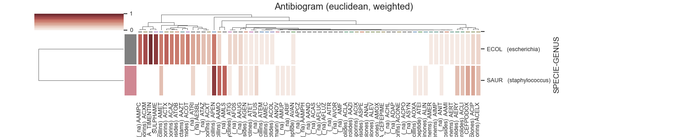
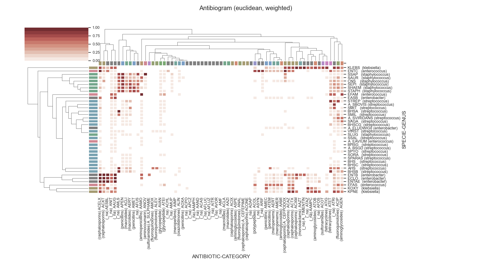

Note
Click here to download the full example code
Graphics Antibiogram example
- 
- 
6 # Libraries
7 from __future__ import division
8
9 # Libraries
10 import sys
11 import numpy as np
12 import pandas as pd
13 import seaborn as sns
14 import matplotlib as mpl
15 import matplotlib.pyplot as plt
16
17 #
18 from pyamr.graphics.antibiogram import Antibiogram
19
20
21 # Configure seaborn style (context=talk)
22 sns.set(style="white")
23
24 # Set matplotlib
25 mpl.rcParams['xtick.labelsize'] = 9
26 mpl.rcParams['ytick.labelsize'] = 9
27 mpl.rcParams['axes.titlesize'] = 11
28 mpl.rcParams['legend.fontsize'] = 9
29
30 # Pandas configuration
31 pd.set_option('display.max_colwidth', 40)
32 pd.set_option('display.width', 300)
33 pd.set_option('display.precision', 4)
34
35 # Numpy configuration
36 np.set_printoptions(precision=2)
37
38 # -------------------------------------------------------------------------
39 # helper methods
40 # -------------------------------------------------------------------------
41
42
43 # -------------------------------------------------------------------------
44 # main
45 # -------------------------------------------------------------------------
46 # Data path.
47 path = '../../pyamr/fixtures/fixture_antibiogram.csv'
48
49 # -------------------------------
50 # Load data
51 # -------------------------------
52 # Load
53 dataframe = pd.read_csv(path)
54
55 # -------------------------------
56 # Create object
57 # -------------------------------
58 # Antibiogram plotter
59 antibiogram = Antibiogram(column_organism='organismCode',
60 column_antibiotic='antibioticCode',
61 column_genus='specieName',
62 column_category='antibioticClass',
63 column_index='sari')
64
65 # Fit antibiogram
66 antibiogram = antibiogram.fit(dataframe)
67
68 # ---------
69 # Example 1
70 # ----------
71 antibiogram.plot(organisms=['ECOL', 'SAUR'], figsize=(15, 3))
72
73 # ---------
74 # Example 2
75 # ---------
76 antibiogram.plot(genera=['staphylococcus',
77 'klebsiella',
78 'streptococcus',
79 'enterococcus',
80 'enterobacter'],
81 categories=None,
82 method='weighted',
83 metric='euclidean',
84 figsize=(16, 9))
85
86 # Show
87 plt.show()
Total running time of the script: ( 0 minutes 3.404 seconds)